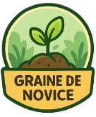

Bienvenue Jardinier
Mon Jardin
Déconnexion
Tableau de bord du jardin
Mes Badges

Statistiques
üåø Plantes actives : 23
üìè Surface cultiv√©e : 45 m¬≤
üçÖ R√©coltes cette saison : 87
⏱️ Temps d'entretien : 12h/semaine
Paramètres
Changer le mot de passe
Gérer les notifications
Langue : Français
Supprimer le compte